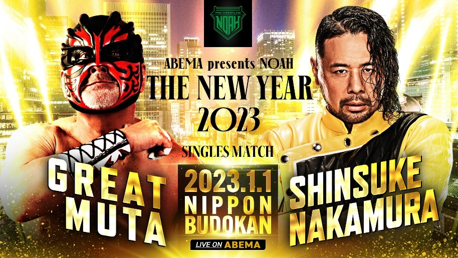
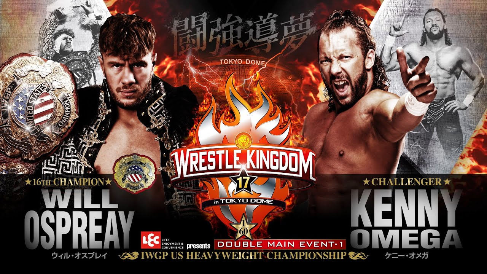
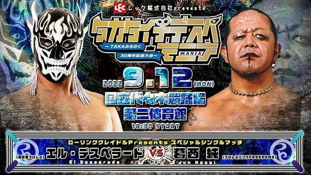
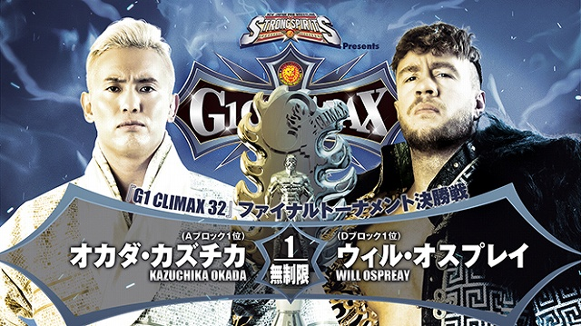

2023/1/1 日本武道館 スペシャルシングルマッチ グレート・ムタ VS SHINSUKE NAKAMURA

2023年元旦。
すべてのプロレスファンが想像すらできなかった奇跡の一戦が日本武道館にて行われた。
元・新日本プロレス、現・WWEスーパースター中邑真輔と2月にラストマッチを控えたグレート・ムタとのスペシャルシングルマッチが実現されたのだ。WWEは世界一のプロレス団体で、他団体に選手を派遣することは皆無に近い。
そんな中、突如プロレスリング・ノアの元日、日本武道館での初夢カードが実現した。チケットは即完売し、超満員札止め。全世界の注目を集める一戦となった。
序盤は正統的なグランドレスリングを展開もムタが天井へ向けた毒霧を吹くと場外戦へ突入。ムタが攻勢に出るとリング上ではＳＴＦで捕獲し顔面をかみついた。中邑は蹴り、ニードロップで逆襲。ムタもドラゴンスクリューからのアキレス腱固めで応戦した。
さらに低空ドロップキックから足４の字固めで追い込む。中邑はシャイニングウィザードをブロックすると回し蹴りで逆転。しかし、ムタは中邑が突っ込んだところを真っ赤な毒霧を顔面に浴びせると場外戦で首絞め、かみつき、イス攻撃で追い込んだ。
それでも中邑はナックルパート５連発で打開するとエプロンのムタをスリーパーで捕らえた。さらに花道を全速力で駆け抜けるラリアットでムタを倒し、飛びつき逆十字で追い詰めた。
ここでムタは緑の毒霧を顔面に噴射しシャイニングウィザードでカウント２に追い込んだ。それでも中邑はカウンターのキンシャサで逆転。
ムタの口にキスする形で毒霧を吸い込むと中邑が毒霧を逆に噴射しキンシャサで勝利した。
リング上で中邑はマイクを持ち「奇跡を…奇跡をありがとう」「バイバイ マイアイドル ムタ イヤァオ！」と万感の思いを込めてムタへ惜別のメッセージを残した。２人は花道を肩を組んで引き上げると武道館はすさまじい拍手に包まれた。
2023/1/4 東京ドーム IWGP USヘビー級選手権試合 ケニー・オメガ VS ウィル・オスプレイ

かつて新日本で一時代を築いた元IWGPヘビー級王者のケニー・オメガが、4年ぶりの新日本のリングで王座を奪取した。
5度目の防衛戦となるIWGP・USヘビー級王者ウィル・オスプレイとの34分38秒にわたる激闘を、得意技の『片翼の天使』で終わらせた。
“最強外国人決定戦”ともいわれた世界注目の一戦。開始早々、オメガが場外での机を使った攻撃でオスプレイの腰を切り裂いた。オスプレイもマットの外されたコーナー金具にオメガの顔面を蹴りつけるなど、
憎悪むき出しの流血戦になった。その後の大技の応酬も、お互いのフォールを返す展開が続いた。
オメガは19年1月に新日本を離脱して米プロレス団体AEWを旗揚げしたが、近年はオスプレイとSNSなどで舌戦を繰り広げていた。
新日本では実現していなかった2人の対決は、昨年8月にAEWのリングで6人タッグマッチで対戦。オメガが先勝していた。そんな長い因縁が、試合をまれに見る激闘に変えた。
試合後の会見で、決着をつけたオメガは「男と男、アスリートとアスリート、パフォーマーとパフォーマー、プロレスラーとプロレスラーの闘い。オレが真のチャンピオンであり、世界中のプロレスの頂点に立った」と悦に浸ってしゃべり続けた。
2022/9/12 代々木競技場 第二体育館 スペシャルシングルマッチ 葛西純 VS エル・デスペラード

葛西純とエル・デスペラードが凶器反則なんでもありのノーDQデスマッチで大流血の激闘を繰り広げた。
以前よりデスペラードは“デスマッチのカリスマ”葛西純への憧れを語っており、2019年5月にシングルマッチで戦った際には両者リングアウトのノーコンテストに。さらにこの試合でデスペラードは顎の骨を折り長期欠場となってしまった。
この日は歓声OKということもあり、入場時から「葛西」コールと「デスペ」コールで会場が包まれる。さらに試合開始後すぐに葛西が有刺鉄線でデスペラードのマスクを破り、素顔の額をカミソリで切っていくと会場からは悲鳴。
葛西は雪崩式リバースタイガーデストロイヤーでフォークボードに叩き込み、デスペラードはインプラントで顔面からカミソリボードに突き刺すなど狂った試合を繰り広げ会場が阿鼻叫喚に包まれるが、最後はデスペラードがピンチェ・ロコで叩きつけ激闘に終止符を打った。
涙目になりながらデスペラードは「葛西さん、ありがとうございました」と座礼。
葛西も「デスペよ、こちらこそありがとうございました。お前みてーなよ、すげーつえー奴と、この会場でメインはれて、オレっちは嬉しいよ」と笑顔を見せる。
だが一転して険しい表情になると「しかしな！最高にいい男のお前に、一つだけ言いたいことがある。お前よ、オレっちと試合する前にこう言ってたな？『燃え尽きて、死んでもいい覚悟でリングに上がる』ってよ。馬鹿野郎。世の中にはな、死にたくて死ぬやつなんていねーんだよお前。生きていてーのに、死ななきゃいけねーやつ、生きていたいのに、死んじまう奴がごまんといるんだよ。
お前みたいによ、最高の仲間に囲まれて、沢山のファンに応援されて、夢だった新日本プロレスに入門して、プロレスラーとしてデビューして、新日ジュニアのトップ取って、最高の人生を送ってるやつがよ、死んでもいい覚悟でリングに上がるなんて言うなよお前！俺たちはよ、死んでもおかしくねー、大怪我してもおかしくねーリングに上がって、生きて生きて、生きてリングをおりなきゃいけねーんだろうが！
死んでもいい覚悟なんて、捨ててしまえ。死んでもいい覚悟なんていらねーんだよ！そうすれば、お前はもっと強くなる」と熱いメッセージ。
この試合ファンの間では2022年、真のベストバウトと呼ばれている。
2022/8/18 日本武道館 G1CLIMAX 32 優勝決定戦 オカダ・カズチカ VS ウィル・オスプレイ

2022年の新日本プロレス真夏の最強戦士決定戦G1CLIMAX決勝戦はオカダ・カズチカVS最強外国人ウィル・オスプレイで行われた。
史上初の32名参加、4ブロックで行われた2022年のG1。例年よりも試合数が少ないため、一敗がブロック通過に大きくかかわるG1となった。その中優勝決定戦まで駒を進めたオカダ・カズチカとウィル・オスプレイ。
新日本プロレス50周年の夏男になったのはオカダ・カズチカであった。
１５年の新日・英国遠征で自らその才能を見い出し、新日入りを勧めた元弟分との対戦。過去の対戦成績で６勝１敗と圧倒してきた最強外国人相手に、オカダがその凄みを全開にした。
オスプレイの抜群のスピードを生かした空中殺法、強烈な打撃を食らう場面もあったが、最後は必殺のレインメーカーで３カウントを奪った。
今年６月、ジェイ・ホワイトに敗れ、４度に渡って防衛してきたＩＷＧＰ世界ヘビー級王座から陥落した「レインメーカー」が真夏の最強決定戦に快勝。完全復活を遂げた。